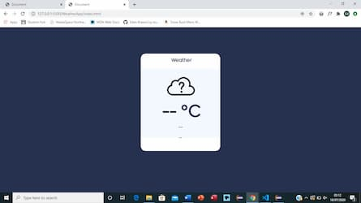

My portfolio



This is another app I made, it asks for your location then gives you the temperature in that area.
This is a quote app that shows random quotes from a preset group of them when clicking on the arrow.
This is a program I made